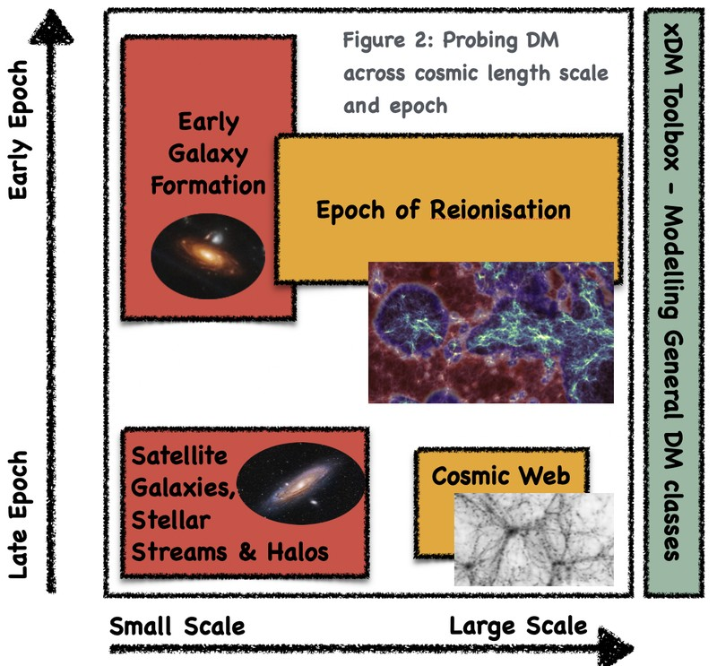

My research focuses on problems in dark matter and galaxy formation, using the tools of theoretical and computational astrophysics. I tend to be driven by physical questions rather than by a particular technique or class of object, and I use numerical simulations as a way of turning those questions into experiments. They allow particular pieces of physics to be varied and followed through from initial conditions to the structures and observables that result.
Over the course of my career this has led me to work on a fairly broad range of problems, including the structure of dark matter haloes, galaxy formation and dynamics, galaxy clusters and large-scale structure, H I surveys, stellar populations, globular clusters, black holes, and high-mass X-ray binaries. What connects them is an interest in how physical processes operating on different scales interact, and in what we can learn about those processes from the structures they produce.
A particular focus of my current work is the nature of dark matter and what observations of galaxies and large-scale structure can tell us about it. Different dark matter models can change the abundance, structure and evolution of haloes, but their effects can be difficult to distinguish from those produced by galaxy formation. I am interested in using controlled simulations to isolate the effects of different dark matter models, and then asking which of those differences survive into observable properties of galaxies.
This builds on a long-standing interest in the structure and dynamics of dark matter haloes. Early work included the numerical convergence of halo density profiles, their asymptotic structure and the reliability of subhalo detection. Later work explored halo assembly, satellite populations, tidal structure, warm dark matter and other departures from the standard cold dark matter picture. More recent work extends this to interacting and wave-like dark matter models and to the problem of connecting dark matter physics to observations of galaxies.

Galaxies form through the interaction of dark matter, gas, stars and feedback, and their observable properties carry information about all of these processes. I have worked on galaxy and halo structure, disc dynamics, baryonic contraction, gas accretion and removal, stellar and AGN feedback, satellite evolution, quenching, and the extended stellar components of galaxies.
This work has often involved asking how a property of a galaxy relates to its dark matter halo, and how that relationship is altered by the processes involved in galaxy formation. It is also where the difficulty of interpreting galaxies as probes of fundamental physics becomes particularly clear: the same observable can contain information about several different physical processes.
I have worked extensively on the use of galaxy populations and neutral hydrogen as probes of galaxy formation and cosmology. This includes the H I mass function and velocity function, the relationship between H I content and halo mass, the spatial distribution and asymmetry of H I, and the effects of environment on gas-rich galaxies.
These questions connect simulations to large observational surveys, including GAMA, SAMI, ASKAP and the developing SKA programme. They provide a useful complement to studies of individual galaxies: rather than asking only how one galaxy formed, we can ask whether a model produces the observed population as a whole.
On larger scales, I have used cosmological simulations to study galaxy clusters, their dynamical state and the influence of baryonic physics on their observable properties. This includes work on cluster density profiles and mergers, gas in cluster outskirts, the comparison of different hydrodynamical galaxy-formation models, the cosmic web and cosmic voids.
Projects such as nIFTy and The Three Hundred have also provided a way to compare different simulation methods and physical models directly. Such comparisons are useful for understanding which features of a prediction arise from the underlying physics and which depend on the numerical or galaxy-formation model used to produce it.
Some of my earlier work addressed smaller physical systems and their consequences on cosmological scales. I have worked on globular and star-cluster evolution, stellar population modelling, and high-mass X-ray binaries. In particular, I studied how populations of X-ray binaries associated with early galaxies could heat and ionise the intergalactic medium during the epoch of reionisation.
This is an example of the connections between scales that interest me: processes involving individual stars and binary systems can have consequences for the evolution of galaxies and, ultimately, for the state of the intergalactic medium.
Simulation is the tool that runs through much of this work. I am interested not only in using simulations to answer scientific questions, but also in the numerical problems involved in making them reliable and useful. This has included work on numerical convergence, halo and subhalo identification, merger trees, mass functions, mock catalogues, synthetic observations and the comparison of different simulation methods.
I also develop scientific software and computational infrastructure, from tools for analysing and visualising simulations to codes for generating and modelling astrophysical populations. I particularly enjoy building things that are useful beyond the immediate problem for which they were developed.
A question that connects much of this work is how information about underlying physics survives the journey from theory, through structure formation and the complex processes of galaxy formation, to something we can actually observe. A simulation gives us an opportunity to follow that journey and to experiment with its individual components, but it also introduces assumptions of its own.
I am therefore interested not only in what a model predicts, but in what can genuinely be inferred from that prediction or from an observation. Which differences are robust? Which depend on modelling choices? Where is information lost, and where are apparently distinct physical explanations observationally degenerate? For me, these questions are often as interesting as the particular system being simulated.